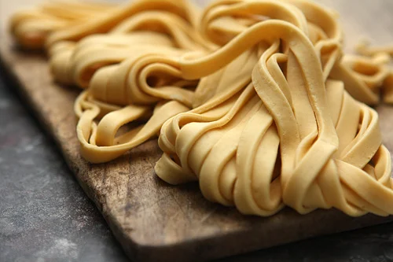

Fresh Pasta

Description
Fresh pasta is a delicate, un-dried noodle made from a dough of flour, eggs, and sometimes water or olive oil, then kneaded, rested, and shaped into various forms
Ingredients
- 1 cup type-00 flour
- 1/2 teaspoon salt
- 2 egg yolks, beaten
- 2 tablespoons water (optional)
Steps
- Combine flour and salt in a bowl.
- Make a well in the centre of flour and add beaten egg yolks.
- Slowly combine flour and eggs until a dough forms.
- Knead dough on floured surface for 3 to 4 minutes.
- Wrap dough in saran wrap and leave to rest for one hour.
- Roll out dough by hand or with pasta rolling machine to desired thickness.
- Cut into strips of desired thickness and lenght.
Home